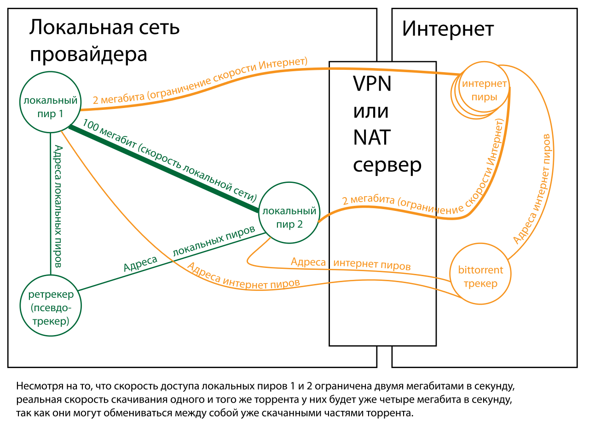
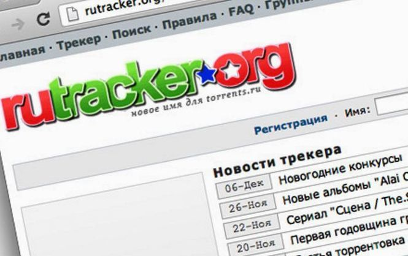
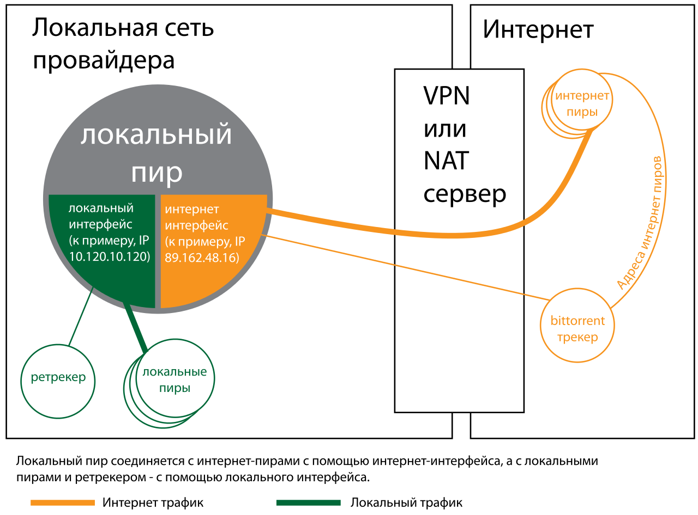

![]()
Ретрекер
Ретрекер (retracker, также встречается термин псевдотрекер) — технология оптимизации обмена битторрент (bittorrent) трафиком внутри локальных сетей. Ретрекер позволяет установить прямое соединение по протоколу битторрент между абонентами одного оператора (или нескольких операторов, имеющих соглашение об обмене локальным трафиком), каждый из которых использует внутренний (локальный) IP-адрес. Технически ретрекер представляет  собой простейший bittorrent трекер, как правило, анонимный, работающий внутри адресного пространства локальной сети интернет-провайдера. Использование ретрекера позволяет пирам обмениваться трафиком на повышенной скорости, используя внутреннюю адресацию локальной сети провайдера, так как доступ к локальной сети у многих российских интернет-провайдеров разрешён на более высокой скорости, нежели доступ в веб. Кроме того, использование ретрекера снижает нагрузку на магистральные каналы связи за счет того, что абонентам не нужно скачивать по отдельности одни и те же данные.
Для того, чтобы bittorrent клиент смог воспользоваться преимуществами ретрекера, нужно добавить в список announce url торрента announce url ретрекера. Некоторые трекеры делают это автоматически, добавляя адреса авторизованных ретрекеров на основании анализа IP адреса пользователя. В других случаях пользователям приходится добавлять announce url ретрекера в торрент-файлы самостоятельно, или с помощью специальных программ — торрент-патчеров. Некоторые провайдеры (см. ниже) предпринимают попытки установки прозрачного прокси, перехватывающего обращения по HTTP портам к популярным трекерам. Такой прокси изменяет torrent файлы при скачивании и добавляет к ним локальный ретрекер. Кроме того, на некоторых трекерах применяется добавление во все торрент-файлы адреса «retracker.local», который отображается на IP действующего ретрекера DNS-серверами провайдера. Существуют также и другие решения проблемы локального обмена битторрент-трафиком.
Важно не путать ретрекеры с обычными локальными трекерами локальных сетей. Ретрекер не ставит задачи обмена торрент-файлами, систематизации торрент-файлов, поиска и так далее. Ретрекер служит исключительно средством повышения скорости обмена данными между пирами.
Следует иметь в виду, что поддержка ретрекеров возможна только в мультитрекерных bittorrent-клиентах, например, в uTorrent. Торрент-клиенты, в которых нет поддержки мультитрекерной работы, например Vuze, обращаются только к первому ответившему трекеру, таким образом, ретрекер использован не будет, либо будет использован только он.
История ретрекеров
24 августа 2007 года идея ретрекера была описана и реализована абонентом под псевдонимом unxed сети Корбина телеком (Санкт-Петербург). 21 сентября 2007 с подобной инициативой выступила администрация трекера rutracker.org. При этом администрация rutracker.org крайне негативно отозвалась о попытках пользователей локальных сетей организовывать собственные ретрекеры, и предложила свой собственный вариант централизованной установки ретрекеров на технических площадках провайдеров. Первый ретрекер от rutracker.org заработал в пиринговом пространстве домашней сети TiERA в Санкт-Петербурге 5 февраля 2008.
Подход rutracker.org в корне не устраивал пользователей, провайдеры которых не желали устанавливать у себя ретрекеры официально. Поэтому в качестве альтернативы «официальным провайдерским» ретрекерам в сентябре 2008 года опять же в сети Корбина телеком в Санкт-Петербурге силами пользователей этой сети была запущена система локальных ретрекеров (Re-Tracker.ru, которая была создана инициативной группой людей, известных под никами FreeM@N (Дмитрий) и Shift (Станислав)). С октября 2008 года подобная система начала функционировать в московской сети компании Корбина телеком, покрыв почти полностью городскую локальную сеть.
Впоследствии администрация трекера rutracker.org отказалась от практики добавления индивидуальных адресов ретрекеров на основе диапазона IP клиента. Вместо этого во все торренты добавляется адрес retracker.local (таким образом, желающие провайдеры могут сделать переадресацию этого адреса на свой ретрекер через свои сервера DNS).
Адрес retracker.local поддерживается далеко не во всех локальных сетях, и, кроме того, не работает, если пользователь использует DNS-сервера, отличные от DNS-серверов своего провайдера. Поэтому проблема создания пользовательских ретрекеров в локальных сетях до сих пор остается актуальной.
Система локальных (пользовательских) ретрекеров
Система локальных ретрекеров устроена следующим образом: торрент-файл, который скачивает пользователь, перехватывается программой Torrent Patcher, после этого измененный файл передается торрент-клиенту, например µTorrent. Во время патчинга добавляются списки ретрекеров. Также программа поддерживает «безопасный» способ добавления ретрекеров посредством Magnet-ссылки (работает только на µTorrent версии 1.8.1 и выше). После этого торрент клиент делает запрос на трекеры и на локальные ретрекеры, после запроса на локальные он получает список локальных пиров и это даёт возможность передавать данные по протоколу bittorrent на скорости локальной сети провайдера. При этом сами локальные ретрекеры обычно устанавливают у себя пользователи-энтузиасты.
Если в сети, в которой устанавливается локальный ретрекер, используется двойная адресация (то есть, абонент получает два IP адреса — публичный и внутрисетевой), то ретрекер должен работать на сетевом интерфейсе с внутрисетевым адресом. В противном случае каждый пользователь ретрекера должен будет прописать статический маршрут таким образом, чтобы трафик до ретрекера шёл через локальный интерфейс — иначе преимущества ретрекера сойдут на нет.
Преимущества
Преимущества создания ретрекеров на базе компьютеров абонентов (в отличие от ретрекеров, установленных на площадке провайдера):
Независимость как от администрации трекеров, так и от администрации провайдеров. Вследствие этого:
Недостатки
Недостатки подобного подхода:
Поддержка ретрекеров через адрес retracker.local
Оригинальная реализация идеи ретрекера была опубликована 10 марта 2009 на сайте nag.ru. Смысл её сводится к тому, чтобы либо на стороне трекеров, либо на стороне битторрент-клиентов автоматически добавлять во все торренты адрес вида http://retracker.local/. Таким образом, каждый провайдер через настройки своих dns серверов сможет самостоятельно указать адрес своего сервера-ретрекера (а если провайдер не имеет сервера-ретрекера, возможно использование пользовательских ретрекеров через редактирование файла hosts). С 18 сентября 2009 года популярный трекер rutracker.org добавляет в торренты для российских адресов http://retracker.local.
Преимущества
Недостатки
Другие решения проблемы локального обмена bittorrent трафиком
bep22
На сайте bittorrent.org был опубликован проект расширения протокола битторрент для автоматического обнаружения локальных трекеров. Популярный bittorrent-клиент µTorrent поддерживает это расширение протокола включением опции isp.bep22 в разделе «Дополнительно» окна настроек. В последней на 2011-10-14 версии программы 3.0.25756 эта опция по умолчанию включена. Проверить, поддерживается ли эта технология в вашей сети, можно следующим образом:
Если в результате вы получите сообщение об ошибке, значит, технология не поддерживается.
Решение провайдера Ozerki.net
Санкт-Петербургский интернет провайдер Ozerki.net (впоследствии приобретен оператором Сумма Телеком в составе оператора Северен-Хоум, работавшего под брендом Цифра) использовал собственную технологию добавления адреса ретрекера в торрент файлы. Согласно сообщению администратора сети, трафик с торрент-трекеров с помощью фаервола iptables перенаправлялся на прокси-сервер на базе Squid, который в свою очередь обрабатывал все скачиваемые пользователями торрент-файлы программой-патчером.
Решение провайдера SmartHome
13 ноября 2009 года Санкт-Петербургский интернет-провайдер SmartHome объявил о запуске своей реализации перехвата и добавления адреса ретрекера, опубликовав полное описание технологии на форуме nag.ru, а также анонсировал поддержку расширения isp.bep22 в локальной сети.
Local Peer Discovery
Возможности, подобные использованию ретрекеров, предоставляет функция «Local Peer Discovery», присутствующая в bittorrent клиенте µTorrent начиная с версии 1.7 build 1065, выпущенной 5 апреля 2007. Так как эта функция использует multicast пакеты, блокируемые большинством интернет провайдеров для защиты от вирусных эпидемий, область её применения ограничивается небольшими локальными сетями, состоящими из одного сегмента.
IPv6
Переход на шестую версию протокола IP решает проблему связанности локальных адресов, так как количество возможных адресов IPv6 настолько велико, что в принципе исключает потребность в локальных IP адресах. Далеко не всё ПО (как клиентское, так и серверное) в настоящий момент поддерживает IPv6. В качестве временного решения возможно использование туннельных протоколов, таких как Teredo. Начиная с Windows Vista, поддержка Teredo включена в ОС по умолчанию. Для более ранних версий клиент µTorrent для ОС Windows дает возможность установить Teredo автоматически, через меню настроек.